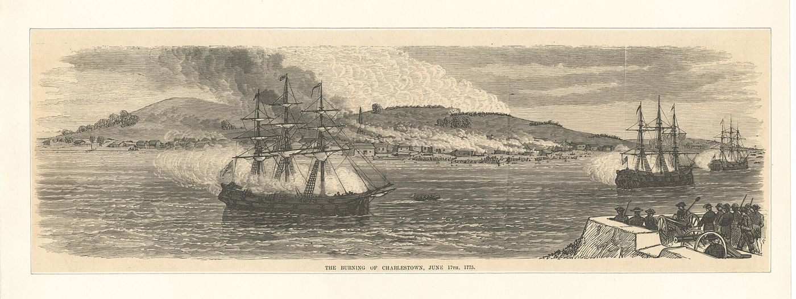
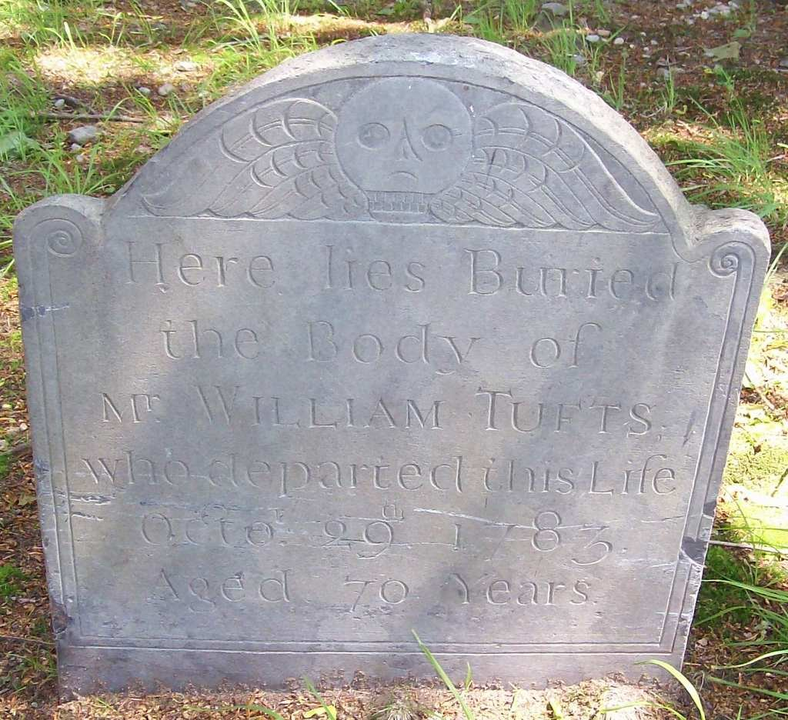

Biography
Lieut. William Tufts was a generation older than most of the family’s Revolutionary soldiers. Born in Charlestown in 1713, he had helped build Fort Lawrence on the Bay of Fundy, and he died at Medford in 1783.
Service Record
Town: Charlestown; Medford · Dates: 1713 – 1783
Born 10 June 1713 in Charlestown; died 29 Oct. 1783 in Medford. (Tufts Kinsmen, Vol. I, p. 116, family no. 13-6)
Served building Fort Lawrence, Bay of Fundy, with his brother James and nephew James Jr.; described as dying in service during the Revolution. (Tufts Kinsmen, Vol. I, p. 116, family no. 13-6)
Family Connection
Family number 13-6 in Tufts Kinsmen, Vol. I. Parents are not named in the extract seen.
Relatives with profiles on this site: son William Jr. (1736–1782; mother Catherine Wyman) ; son George (1747–1796; mother Catherine Wyman)
; son George (1747–1796; mother Catherine Wyman) ; son Grimes (1748–1808; mother Catherine Wyman)
; son Grimes (1748–1808; mother Catherine Wyman) ; son Samuel 2nd (1752–1815; mother Mary Francis)
; son Samuel 2nd (1752–1815; mother Mary Francis) ; son David (1763–1823; mother Mary Francis)
; son David (1763–1823; mother Mary Francis) ; son Moses (possible; Brooks no. 266a)
; son Moses (possible; Brooks no. 266a) ; father James Tufts (1672–1733); grandfather James Tufts (killed 1675); daughter Lucy Tufts Pritchard; son Richard Tufts; grandson Uriah Tufts (1768–1837). Sons by Catherine Wyman: William, George, Grimes (Brooks, p. 550). By Mary Francis: Samuel and David. Moses (no. 266a) is listed without a mother.
; father James Tufts (1672–1733); grandfather James Tufts (killed 1675); daughter Lucy Tufts Pritchard; son Richard Tufts; grandson Uriah Tufts (1768–1837). Sons by Catherine Wyman: William, George, Grimes (Brooks, p. 550). By Mary Francis: Samuel and David. Moses (no. 266a) is listed without a mother.
Spouse(s)
- Catherine Wyman (d. 1749). Find a Grave gives the marriage as 1732.
- Mary Francis. Married February 8, 1750 (Brooks); Find a Grave gives 1749.
“William Tufts m., 1st, Catherine Wyman , who d. 1749; and had-- … He m., 2d, Mary Francis , Feb. 8, 1750”
Charles Brooks, History of the Town of Medford (1855), Register of Families, p. 550. Page scan · Text (Perseus)
1749/1750: a February 1749/50 date in Old Style dating would explain the difference.
Authoritative IDs / Index Numbers
| Source | ID / status |
|---|---|
| Perseus person index (auth=) | auth=tufts,william. This is a name-level key shared by every William Tufts in Perseus, not a personal ID. Use it with the passages cited on this page. |
| Find a Grave memorial | 26920790 (dates and family checked) |
| Brooks, History of Medford (1855) register no. | No. 2-255, p. 550 |
| Tufts Kinsmen, Vol. I family no. | 13-6 |
| Mass. Soldiers and Sailors | Not yet checked for this page |
| DAR ancestor no. | Note: Pending further work. |
| FamilySearch ID | Note: Pending further work. |
| Geni profile | Note: Pending further work. |
| WikiTree ID | Note: Pending further work. |
| Town / vital records | Brooks’s register (above) is drawn from Medford town and church records; printed VR volume and page not yet checked |
Only IDs confirmed against dates and family are given as matches. “Not yet checked” means the source has not been searched; “Checked, not found” means it was searched without a match.
⚑ Unverified
Which MSS William entry, if any, is his (possibly the 1776 2d Lieutenant in Capt. Ezekiel Knowlton’s co.; see William Tufts (several men)). No other source on this site has yet been checked for this man.
Pictures


.jpg){kind=link}
Find a Grave
Find a Grave memorial 26920790. As given there (secondary; not checked against original records): “LT William Tufts.” Born 10 Jun 1713, Charlestown; died 29 Oct 1783, aged 70, Medford. Salem Street Burying Ground, plot 395. Parents James Tufts (1674–1733) and Ruth Grimes; wives Catharine Wyman (m. 1732) and Mary Francis (m. 1749); children include William Jr., George, Grimes and Samuel 2nd.


Business
A man of this name appears in Brooks’s History of Medford in connection with the brickyards. Whether it is this man is Unverified. See Businesses.
From Cutter’s Memoirs (1910)
“William, son of James (2) Tufts, was born June 10, 1713, and died at Medford, October 29, 1783, aged seventy, according to his gravestone.”
Cutter, Genealogical and Personal Memoirs, vol. II, p. 1199. Page (Internet Archive)
Cutter places him in the line of the immigrant’s son James, killed at Bloody Brook in 1675, and grandson James (1672–1733), who lived at Salem before moving to Charlestown in 1704 and died at Medford. William was the seventh child of James and his first wife, Ruth (vol. II, pp. 1198–1199).
“He married (first) February 28, 1732-3, Catherine Wyman, of an old Woburn family. She died February 20, 1748-9, aged thirty-two”
Cutter, Genealogical and Personal Memoirs, vol. II, p. 1199. Page (Internet Archive)
“He married (second) February 8, 1750, Mary Francis, who died December 1, 1812, aged ninety-three.”
Cutter, Genealogical and Personal Memoirs, vol. II, p. 1199. Page (Internet Archive)
Cutter lists thirteen children born at Medford: by Catherine, Catherine (who married William Tufts Jr., son of John), William , George
, George , Grimes
, Grimes and Uriah; by Mary, Mary, Samuel
and Uriah; by Mary, Mary, Samuel (born August 19, 1752), Lucy (who married Thomas Pritchard), Francis, David
(born August 19, 1752), Lucy (who married Thomas Pritchard), Francis, David , Richard (born November 17, 1763), Moses
, Richard (born November 17, 1763), Moses and Aaron (vol. II, p. 1199).
and Aaron (vol. II, p. 1199).
⚑ Unverified
Cutter puts Moses, Aaron and David among the children of the second wife, Mary Francis, married 1750. That does not fit Moses’s 1744 baptism on his own page, and Cutter’s date for David (June 20, 1758) differs from the 1763 on David’s page. Brooks (p. 550) lists Moses without a mother. Cutter’s list is not followed where it conflicts.
Cutter’s Tufts sketch (vol. II, pp. 1198–1200) is a compiled family history of 1910, written for a descendant’s line. Quotes are from the Internet Archive’s scanned text, checked against the printed page numbers.
Source added: William Richard Cutter, ed., Genealogical and Personal Memoirs Relating to the Families of the State of Massachusetts (New York: Lewis Historical Publishing Co., 1910).
Links and Resources
Every source, record, map, survey, marker and artifact tied to this person, gathered in one place. Page numbers are given where a book is cited.
Maps, Surveys and Artifacts
- — The Burning of Charlestown, June 17th, 1775. A print of Charlestown burning during the Battle of Bunker Hill, from the Emmet Collection, New York Public Library. Image: NYPL Emmet Collection. Public d
- Source: Wikimedia Commons — The Burning of Charlestown, June 17th, 1775. A print of Charlestown burning during the Battle of Bunker Hill, from the Emmet Collection, New York Public Library.Image: NYPL Emmet Collection. Public domain.
- — Gravestone of Lieut. William Tufts, Salem Street Burying Ground, Medford. Plot 395. The stone reads “Mr William Tufts who departed this Life Octr 29th 1783 Aged 70 Years.” Photo: BobBoston, Find a Gra
Graves and Memorials
- Find a Grave memorial · 26920790
Markers, Plaques and Places
- Businesses — A man of this name appears in Brooks’s History of Medford in connection with the brickyards. Whether it is this man is Unverified.
Digitized Books and Journals
- Charles Brooks, History of the Town of Medford (1855), Register of Families, p. 550. · Page scan
- Charles Brooks, History of the Town of Medford (1855), Register of Families, p. 550. · Text (Perseus)
- Cutter, Genealogical and Personal Memoirs, vol. II, p. 1199. · Page (Internet Archive)